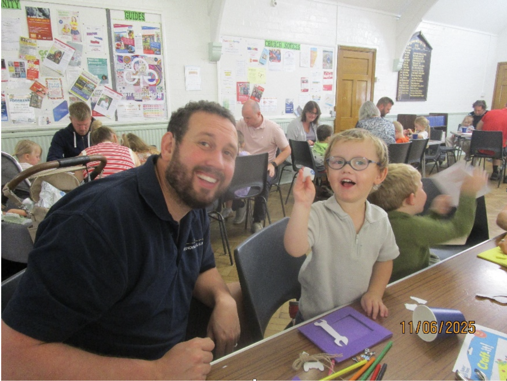
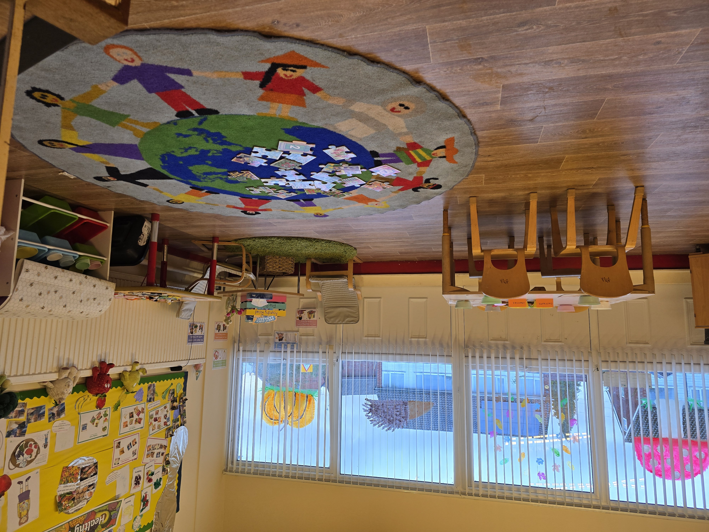
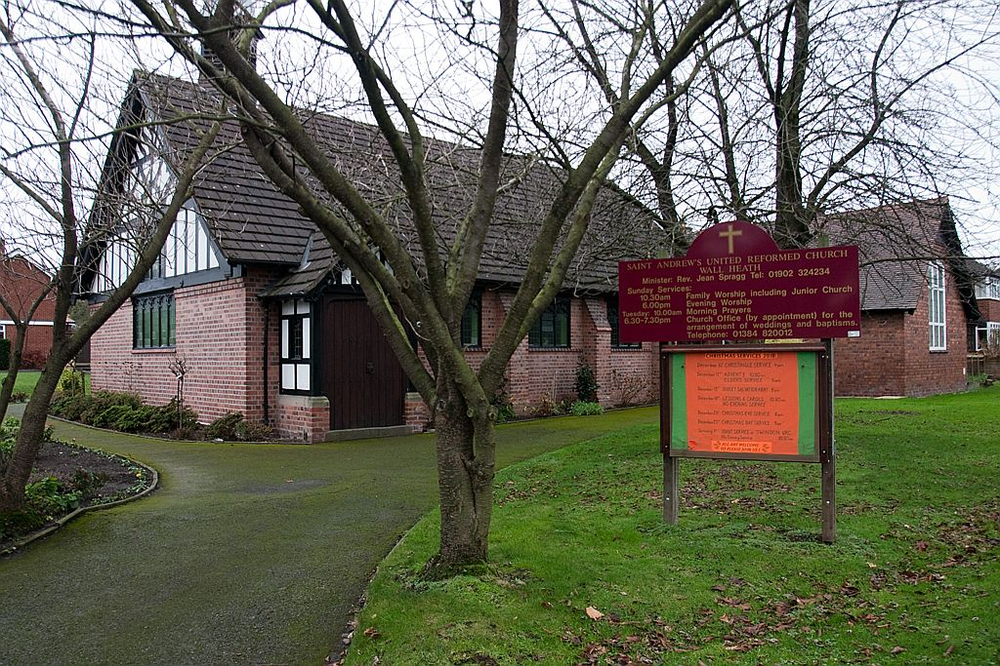

Welcome to
Foundry Road
Pre-School
Who We Are
It is our aim at Foundry Road Pre-school to provide a safe, warm, caring and stimulating environment in which your child can learn through play with children of a similar age. It is our aim to encourage children’s mental, physical and social development whilst allowing them to develop their independence.
- All staff are dedicated childcare professionals who are loving and caring.
- All staff are DBS checked.
- All staff attend regular training including Child Protection and First Aid.
- We are Ofsted registered.
- We have children between the ages 2 – 5 years.
All children will be treated as individuals and be genuinely cared for regardless of gender, religion, culture or disability promoting their self-esteem. They will be stimulated by our use of planned activities which will not only include play but educational elements which will prepare them for their next stage in life.


What We Do
We offer a range of exciting activities and equipment that are provided to enable each child to learn, experience and develop at their own individual level. Children learn to respect the needs of others, acceptable social behaviour and manners, i.e. sharing, tidiness, co-operation, self-dressing, toilet training, and respond to daily routines.
Children are encouraged to express their own thoughts, questions, predict happenings and to be confident with their peer groups. We prepare children ready for the move onto Primary School with transition visits where possible. We aim to provide an environment where the parents feel totally satisfied and confident with the care offered to their child, through a disciplined, yet caring and loving environment. Your child will develop physically, emotionally, socially and intellectually. We offer a range of cultural capital experiences for children.
We aim to provide a caring environment and provide stimulation both in play and education and create happy, enthusiastic and inquisitive individuals who are very well prepared for their next steps in life. We maintain good contact with all local schools, making children’s transition easier for them. We see ourselves in partnership with Parents and carers and children, which will encourage mutual respect and a shared understanding.
Where We Are
The pre-school is situated in rooms behind St. Andrew's Church, Foundry Road, Wall Heath. We have two well
equipped and spacious rooms, and a large room for cafe. We have a secure outside play area with spongy floor.
We also have the use of the large church hall, especially when outside play is not possible.
Our premises are secure and safe. We are totally committed to mandatory regulations and in particular Health and Safety. All equipment is appropriate to the children’s age and stages of development and maintained in first class working order and checks are in place to ensure the safety of the children. Materials will be provided to stimulate and educate children i.e. texture, tastes, size etc, again appropriate to the children’s age and stages of development. We aim to make learning fun in a safe and caring environment.
